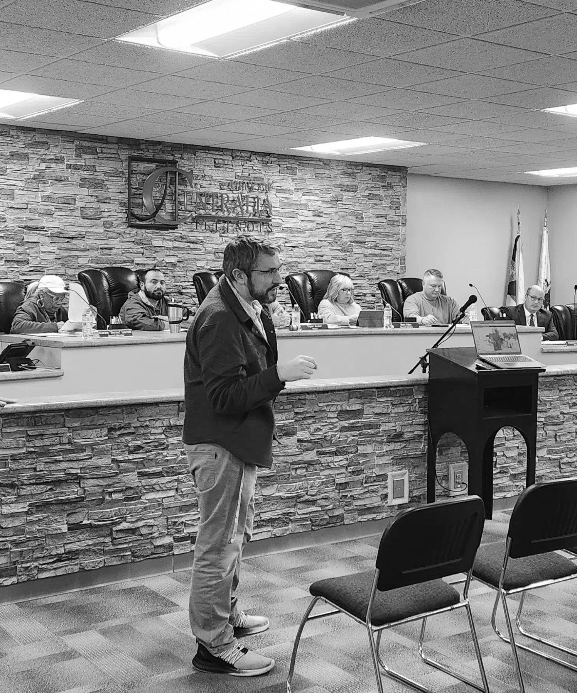

SELECTED WORK
Portfolio
A selection of professional projects, research, planning work, and community development initiatives.
Community Economic Development
Comprehensive planning projects focused on community visioning, long-term development, land use, and strategic priorities.
- Centralia Comprehensive Plan (2024) Throughout the year 2024, I worked with elected officials, city staff, local stakeholders and residents of the City of Centralia to develop a Community Vision for the future and establish an action plan to meet both present and future community needs. Click to view the Centralia Comprehensive Plan.
GIS analysis and mapping used to support community planning, economic development, infrastructure, and decision-making.

Discussing GIS mapping in Centralia, IL.
Over the years I have worked with dozens of local governments and businesses in the grant writing process, from project development through grant award closeout.
I have been afforded the opportunity to write and been awarded tens of millions of dollars in grant funding for local governments to complete public infrastructure improvements, housing rehabilitation activities, economic development projects.
These funds have come from numerous state and federal agencies including, the Economic Development Administration (EDA), Department of Justice (DOJ), Federal Emergency Management Agency (FEMA), Department of Agriculture (UDSA), Department of Housing and Urban Development (HUD), IL Department of Transportation (IDOT), IL Department of Commerce & Economic Opportunity(DCEO), IL Environmental Protection Agency (IEPA), among many others.
Hazard mitigation planning and project development designed to reduce community vulnerability and improve long-term resilience.
- Jasper County Hazard Mitigation Plan (2021) This Hazard Mitigation Plan was developed with the fundamental goal of informing State and local leaders of the risks and impacts natural hazard events could have on Jasper County, Illinois and further examine how to best lessen the adverse impacts that these hazard events can have on the local community. Click to view the Jasper County Hazard Mitigation Plan.
The Enterprise Zone Program is designed to stimulate economic growth and neighborhood revitalization in economically depressed areas of the state through state and local tax incentives, regulatory relief and improved governmental services.
I have assisted in the development and creation of two Illinois Enterprise Zones, (1) the Vandalia/Fayette County Enterprise Zone (2019), and (2), the Flora/Clay County Enterprise Zone (2017).
- South Central Illinois Regional Cluster Analysis (2017) An Industrial Cluster Analysis explores how groups of inter-related industries drive wealth creation in a region, primarily through the export of goods and services. This analysis examined the regional economic structure of the SCIRPDC Economic Development District, including the counties of Clay, Effingham, Fayette, Jasper and Marion in south central Illinois. Click to view the South Central Illinois Cluster Analysis.
TIF planning and development work supporting community investment and economic development.
- Altamont South Redevelopment Project (2021) In 2021, I worked with the elected officials of the City of Altamont to develop a Tax Increment Financing District intended to redevelop approximately 68 acres of real estate south of Interstate 70. This redevelopment plan most notably included the creation of the South Point Subdivision. Click to view the Altamont South Redevelopment Plan
- Flora U.S 50 Corridor Redevelopment Project (2020) I provided direct assistance to the City of Flora from Fall of 2019 through 2020 in the development of the plan for redevelopment of approximately 700 acres of underdeveloped or blighted areas of the community. The plan included an estimated $11.5 Million dollars in re-investment into the TIF area over the next two decades. Click to view the Flora U.S 50 Corridor Redevelopment Project
- Teutopolis Central Redevelopment Project Area (2017) In 2017, I worked with officials of Teutopolis, Illinois in the creation of the Central Redevelopment Area Plan. This plan included the Prairie View Subdivision in the southern portion of the community. This new subdivision has been a one of the many recent success stories in the Village. Click to view the Teutopolis Central Redevelopment Project Area
Discussing Tax Increment Financing in Altamont, IL.
Research
Prior to joining the ranks of non-profit organizational leadership and community economic development, I authored multiple research articles as a student of Eastern Illinois University. My research focused on public policy impacts as well as international organization leadership.
As a student, I served as an Editor of The EIU Political Science Review. Following my graduation, I continued my work in the field as a scholarly peer reviewer for the Review of Policy Research journal.
- Eastin, Luke J. L. (2014). An Assessment of the Effectiveness of Renewable Portfolio Standards in the United States. The Electricity Journal, Volume 27, Issue 7, Pages 126-137.
- Eastin, Luke J. L. (2014). Home rule and environmentalism: the adoption of green initiatives in US municipalities. International Journal of Urban Sustainable Development, 6(2), 206–220.
- Eastin, Luke J. L. (2014). Implementation of Renewable Portfolio Standards in the United States. Master's Theses. 1185.
- Eastin, Luke J. L. (2013). Legitimacy Deficit: Chinese Leadership at the United Nations. Journal of Chinese Political Science, 18, 389–402.
- Eastin, Luke J. L. (2012). Article Critique: “Shifting Winds: Explaining Variation in State Policies to Promote Small-Scale Wind Energy.” The Eastern Illinois University Political Science Review, 1.1 (2012): 4.
Awards & Honors
Selected academic and professional awards and recognitions.
- Professional Community Economic Developer (PCED), National Community Development Institute, 2025
- Illinois DCEO CDBG Conference, Grant Administration Award, 2023
- Illinois GIS Association Regional Conference Presentation: “Utilizing GIS in Local Government Planning”, 2016
- Eastern Illinois University (EIU) Thesis Award of Excellence College of Sciences, 2014-2015
- EIU Distinguished Graduate Student in Political Science, 2014
- Forest Howell Graduate Scholarship in Public Administration, 2013
- EIU Booth Library Award for Research and Creativity—First Place, 2013
- EIU College of Sciences Annual Science Festival Research Recognition, 2012; 2013
- Pi Sigma Alpha, National Political Science Honorary Society, 2012